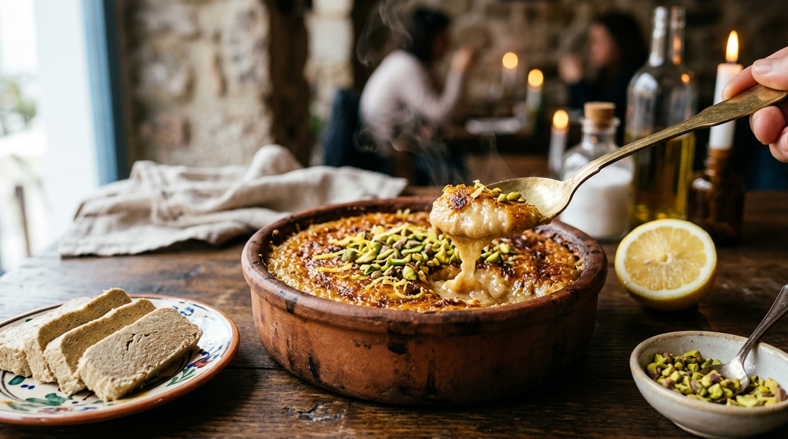

Helva richtig essen: Vom zarten kalten Schnitt zum ofenwarmen Soufflé-Erlebnis
Warum man Tahin-Helva niemals im Kühlschrank lagert, welches gastrointestinale Geheimnis hinter der ofenwarmen Helva nach Fisch steckt und wie Sie in 10 Minuten die perfekte karamellisierte Ofen-Helva zaubern.

„Wer eine Packung Tahin-Helva im Feinkostregal entdeckt, denkt meist nur an ein einziges Szenario: Folie öffnen, eine feste Scheibe abschneiden und sie kalt zum Espresso verzehren. Doch in der jahrhundertealten anatolischen und ägäischen Küstenkultur ist Helva weit mehr als eine feste Süßigkeit – sie ist ein kulinarisches Chamäleon.“
Von den sonntäglichen Frühstückstischen, auf denen die feinen Fasern der Sesampaste zart auf der Zunge zergehen, bis hin zu den traditionsreichen Tavernen der Ägäis, wo sie nach einem üppigen Fischmenü dampfend und zischend im Tongefäß serviert wird: Wie man Helva genießt, entscheidet nicht nur über das sensorische Erlebnis, sondern steht in direkter Wechselwirkung mit unserer Verdauungsbiochemie.
1 Die Kunst des kalten Schnitts: Raumtemperatur ist Gesetz
Eine handwerklich gefertigte Tahin-Helva, bestehend aus über 55% schonend geröstetem Steinmühlen-Sesam und natürlichem Seifenkraut-Auszug (Çöven Suyu), ist ein physikalisches Meisterwerk. Ihr volles Aroma und ihre einzigartige Struktur entfaltet sie jedoch nur unter den richtigen thermischen Bedingungen.
Der Kälte-Kollaps im Kühlschrank
Lagert man Helva im Kühlschrank, erstarren die ungesättigten Fettsäuren des Sesamöls. Die mikrofeine, faserige Kristallmatrix zieht sich zusammen und verhärtet. Das Ergebnis: Die Helva schmeckt kreidig, stumpf und hinterlässt am Gaumen einen klebrig-wachsartigen Film.
Die Magie von 20 bis 22°C
Erst bei wohliger Raumtemperatur verflüssigen sich die Aromastoffe des Sesams sanft. Die typische feinfaserige Struktur (Lif lif doku) entspannt sich. Die Helva muss beim Verzehr kaum gekaut werden; sie schmilzt bereits bei Körpertemperatur (36,5°C) samtig auf der Zunge.
Die Schneidetechnik des Bäckermeisters:
Verwenden Sie niemals ein Messer mit Wellenschliff – die Zähne zerreißen die feinen Zuckerkristall-Brücken und lassen die Helva zu Krümeln zerfallen. Nehmen Sie stattdessen ein langes, glattes, dünnes Kochmesser. Schneiden Sie mit gleichmäßigem, sanftem Druck von oben nach unten. Echte Qualitätshelva teilt sich in saubere, seidig schimmernde Scheiben, ohne zu stauben.
2 Warum isst man nach Fisch ofenwarme Helva? (Gastro-Wissenschaft)
In den Fischlokalen entlang des Bosporus und der Ägäisküste gehört es zum ungeschriebenen Gesetz: Wer gebratenen Wolfsbarsch, Steinbutt oder gegrillte Makrele bestellt, beendet das Mahl mit einer im Tontopf brutzelnden Fırın Helvası (Ofen-Halva). Was auf den ersten Blick wie ein reines Schlemmerritual wirkt, basiert auf einer brillanten physiologischen Symbiose:
1. Neutralisierung der gastrischen Übersäuerung
Fisch und Meeresfrüchte sind extrem reich an Purinen, schwefelhaltigen Aminosäuren und Phosphor. Um diese dichten Proteine aufzuspalten, produziert der Magen schlagartig große Mengen Salzsäure. Sesam ist eines der stärksten basischen (alkalischen) Lebensmittel der Natur – vollgepackt mit bioverfügbarem Calcium, Magnesium und Kalium. Die warme Helva bindet die überschüssige Magensäure, stoppt saures Aufstoßen (Reflux) und schenkt sofortiges Wohlbefinden.
2. Abfangen des reaktiven Blutzuckerabfalls
Fischeiweiß wird vom Magen vergleichsweise rasch in den Dünndarm weitergeleitet. Dadurch fällt der postprandiale Blutzuckerspiegel nach 60 bis 90 Minuten steil ab – das gefürchtete postprandiale Müdigkeitstief stellt sich ein. Die dichten pflanzlichen Lipide und Ballaststoffe des Sesams verzögern die Magenentleerung, glätten die Glukosekurve und sorgen für eine langanhaltende, energetische Sättigung.
3. Die Synergie von Hitze und Zitronensäure
Bei 200°C Grillhitze entfalten sich im Sesam flüchtige Aromastoffe wie Sesamol und geröstete Pyrazine. Der obligatorische Spritzer frischer Zitronensaft spaltet die schwere Ölemulsion enzymatisch an, bricht die Wucht des Zuckers und erzeugt eine frische, umami-süßsaure Balance, die den Gaumen nach fettreichem Meeresfisch komplett reinigt.
3 Das Original-Rezept: Fırında Karamelize Tahin Helvası
Für dieses Restaurant-Erlebnis brauchen Sie weder Profi-Equipment noch exotische Zutaten. Alles, was zählt, sind 10 Minuten Zeit und kompromisslose Rohstoffqualität.
Ofen-Helva im Tontopf (Fırında Helva)
Die Zutaten:
| Zutat | Menge | Die Funktion & der Profi-Tipp |
|---|---|---|
| Helle Tahin-Helva | 250 g | Unbedingt ohne Glukosesirup! 100% Rübenzucker & hoher Sesamanteil. |
| Frischer Zitronensaft | 1.5 EL | Gleichgewicht aus Säure & Fett; verhindert das Ausölen im Ofen. |
| Vollmilch (oder Haferdrink) | 2–3 EL | Schafft die souffléartige, samtige Cremestruktur. |
| Bio-Zitronenabrieb | 0.5 TL | Ätherische Citrusöle harmonieren grandios mit nussigem Sesam. |
| Grüne Pistazien / Haselnüsse | 2 EL | Grob gehackt für den knackigen Texturkontrast zur weichen Creme. |
Schritt-für-Schritt-Zubereitung:
-
1
Zerkleinern & Vermengen: Geben Sie die zimmerwarme Helva in eine Schüssel und zerdrücken Sie sie mit einer Gabel zu groben Flocken. Milch, frischen Zitronensaft und den Zitronenabrieb dazugeben.
-
2
Die Cremigkeit justieren: Mit einer Gabel oder einem kleinen Schneebesen energisch verrühren, bis eine dicke, glatte Creme ohne Klümpchen entsteht. Sie sollte die Konsistenz eines zähen Puddings haben – keinesfalls flüssig wie Pfannkuchenteig.
-
3
Das Gefäß & die Höhe: Füllen Sie die Masse in eine flache, ofenfeste Keramik- oder Tonform (idealerweise ein Güveç). Entscheidend: Die Füllhöhe sollte maximal zwei Fingerbreit (ca. 2–2,5 cm) betragen, damit das Innere cremig bleibt, während die Oberseite karamellisiert.
-
4
Die Grill-Explosion: Heizen Sie den Backofen ausschließlich auf Oberhitze / Grillstufe (200–220°C) vor. Platzieren Sie die Form auf der obersten Schiene. Für exakt 6 bis 8 Minuten backen, bis die Oberfläche dunkelgoldene Blasen wirft und eine krosse Karamellkruste bildet.
4 Der thermische Stresstest: Warum Industrie-Helva im Ofen scheitert
Die Zubereitung einer Ofen-Helva ist der ultimative Lackmustest für die Reinheit einer Sesampaste. Unter der extremen Hitze von 200°C trennt sich die Spreu vom Weizen:
Phasentrennung & Gummihaut
Billige Helva wird oft mit Glukosesirup, Maisstärke und Palmölen gestreckt. Unter Hitze bricht das künstliche Gefüge zusammen: Das Palmöl schwimmt als ranziger Fettfilm obenauf, während der Maissirup am Boden verhärtet und oben eine zähe, ungenießbare Gummischicht bildet.
Stabile Soufflé-Emulsion
Authentische Helva aus 100% Rübenzucker und sortenreinem Steinmühlen-Tahin emulgiert unter Hitze perfekt mit der Zitrone. Sie behält ihre Feuchtigkeit, bläht sich leicht auf und bildet eine hauchdünne, knusprige Waffelkruste mit cremig-schmelzendem Kern.
5 Moderne Kulinarik: 3 kreative Helva-Inspirationen
Beschränken Sie Helva nicht nur auf den Nachtisch – nutzen Sie ihre Bindekraft und Nussigkeit in der zeitgenössischen Fusionsküche:
Gegrillter Helva-Toast
Zwischen zwei Scheiben Sauerteigbrot mit dünnen Bananenscheiben im Kontaktgrill pressen. Die geschmolzene Helva wirkt wie eine nussige Karamellcreme.
Tahini-Halva Latte
Ein Stück zerdrückte Helva im Mixer mit heißer Hafermilch und einem doppelten Espresso schaumig schlagen. Winterlicher Samt-Kaffee ganz ohne Sirup.
Lava-Helva-Cookies
Ein haselnussgroßes Stück Helva in die Mitte von Chocolate-Chip-Keksteig hüllen. Nach dem Backen offenbart sich ein noch flüssiger Sesamkern.
? Häufig gestellte Fragen (FAQ)
1. Sollte Tahin-Helva im Kühlschrank oder bei Raumtemperatur gelagert werden?
Tahin-Helva gehört keinesfalls in den Kühlschrank. Die Kälte lässt die ungesättigten Sesamöle erstarren, zerstört die feine Faserstruktur und hinterlässt ein unangenehm wachsartiges Gefühl im Mund. Ideal ist die Lagerung in einer luftdichten Dose in einem kühlen, trockenen Küchenschrank bei 18 bis 22°C.
2. Warum isst man nach Fischgerichten traditionell ofenwarme Helva?
Fischgerichte erhöhen während der Verdauung die Magensäure und können aufgrund ihrer leichten Verdaulichkeit zu einem raschen Blutzuckerabfall führen. Das mineralstoffreiche Sesam-Tahin wirkt stark alkalisch, puffert überschüssige Magensäure ab und stabilisiert den Blutzuckerspiegel durch wertvolle pflanzliche Fette und Proteine.
3. Warum gibt man bei Ofen-Helva unbedingt frischen Zitronensaft hinzu?
Der Zitronensaft erfüllt zwei Zwecke: Erstens bricht die Säure die schwere Fettigkeit des Sesams und verleiht dem Dessert eine erfrischende Eleganz. Zweitens sorgt die Zitronensäure dafür, dass die Emulsion beim Erhitzen stabil und cremig bleibt, anstatt sich in flüssiges Öl und Zucker aufzuspalten.
4. Was passiert im Ofen, wenn man industrielle Helva mit Glukosesirup verwendet?
Industrielle Produkte mit Glukosesirup und Palmöl versagen unter hoher Ofenhitze: Das billige Fett trennt sich ab und schwimmt als ölige Schicht am Boden, während der künstliche Sirup oben zäh und gummiartig verbrennt. Nur reine Helva aus 100% Rübenzucker und Steinmühlen-Tahin schmilzt gleichmäßig zu einem samtigen Soufflé.
5. Wie bewahrt man bereits angeschnittene Helva optimal auf?
Die Schnittfläche trocknet an der Luft schnell aus. Wickeln Sie die Helva dicht in Pergamentpapier oder lagern Sie sie in einem gut schließenden Glasbehälter bei Raumtemperatur. Setzt sich mit der Zeit etwas Öl an der Oberfläche ab, ist dies ein Gütesiegel für unberührtes, natürliches Sesamöl und kein Zeichen von Verderb.

Entdecken Sie unser Steinmühlen-Tahin
100% sortenreiner ägäischer Goldsesam, langsam zwischen Granitsteinen gemahlen. Die ideale Grundlage für hausgemachte Halva und Dips.
Zur Produktseite